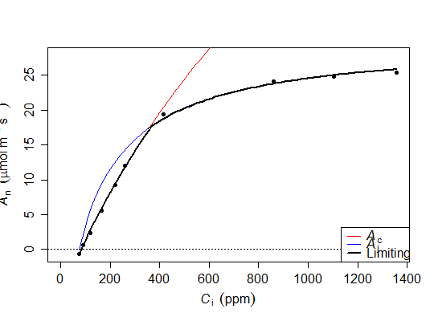
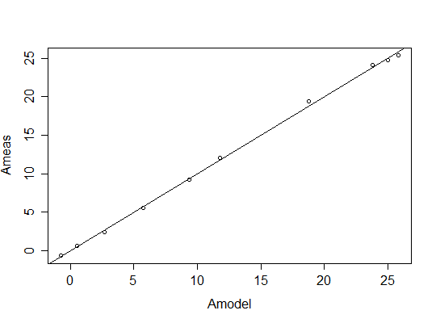
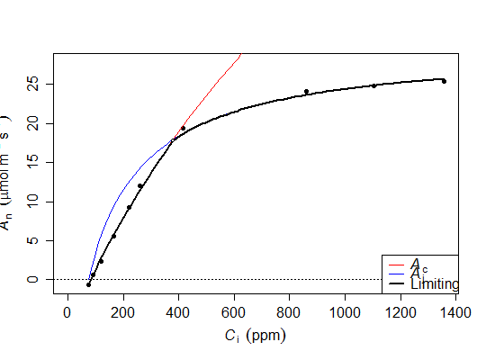

<!DOCTYPE html>
<html lang="en">
  <head>
    <meta charset="utf-8">
<title>fitaci. plantecophys 0.6-4</title>
<meta name="viewport" content="width=device-width, initial-scale=1.0">
<meta name="author" content="">

<link href="css/bootstrap.css" rel="stylesheet">
<link href="css/bootstrap-responsive.css" rel="stylesheet">
<link href="css/highlight.css" rel="stylesheet">
<link href="css/staticdocs.css" rel="stylesheet">

<!--[if lt IE 9]>
  <script src="http://html5shim.googlecode.com/svn/trunk/html5.js"></script>
<![endif]-->

<script type="text/x-mathjax-config">
  MathJax.Hub.Config({
    tex2jax: {
      inlineMath: [ ['$','$'], ["\\(","\\)"] ],
      processEscapes: true
    }
  });
</script>
<script type="text/javascript"
  src="http://cdn.mathjax.org/mathjax/latest/MathJax.js?config=TeX-AMS-MML_HTMLorMML">
</script>
  </head>

  <body>
    <div class="navbar">
  <div class="navbar-inner">
    <div class="container">
      <a class="brand" href="#">plantecophys 0.6-4</a>
      <div class="nav">
        <ul class="nav">
          <li><a href="index.html"><i class="icon-home icon-white"></i> Index</a></li>
        </ul>
      </div>
    </div>
  </div>
</div>

    <div class="container">
      <header>
        
      </header>
      
      <h1>Fit the Farquhar-Berry-von Caemmerer model of leaf photosynthesis</h1>

<div class="row">
  <div class="span8">
    <h2>Usage</h2>
    <pre><div>fitaci(data, varnames&nbsp;=&nbsp;list(ALEAF&nbsp;=&nbsp;"Photo", Tleaf&nbsp;=&nbsp;"Tleaf", Ci&nbsp;=&nbsp;"Ci", PPFD &nbsp;=&nbsp;"PARi", Rd&nbsp;=&nbsp;"Rd"), Tcorrect&nbsp;=&nbsp;TRUE, citransition&nbsp;=&nbsp;NULL, quiet&nbsp;=&nbsp;FALSE, startValgrid&nbsp;=&nbsp;TRUE, algorithm&nbsp;=&nbsp;"default", useRd&nbsp;=&nbsp;FALSE, ...)</div>
<div>"print"(x, ...)</div>
<div>"summary"(object, ...)</div>
<div>"coef"(object, ...)</div>
<div>"fitted"(object, ...)</div>
<div>"plot"(x, what&nbsp;=&nbsp;c("data", "model"), xlim&nbsp;=&nbsp;NULL, ylim&nbsp;=&nbsp;NULL, whichA&nbsp;=&nbsp;c("Ac", "Aj", "Amin"), add&nbsp;=&nbsp;FALSE, pch&nbsp;=&nbsp;19, addzeroline&nbsp;=&nbsp;TRUE, addlegend&nbsp;=&nbsp;!add, transitionpoint&nbsp;=&nbsp;TRUE, lwd&nbsp;=&nbsp;c(1, 2), ...)</div>
<div>fitacis(data, group, progressbar&nbsp;=&nbsp;TRUE, quiet&nbsp;=&nbsp;FALSE, ...)</div>
<div>"plot"(x, how&nbsp;=&nbsp;c("manyplots", "oneplot"), ...)</div>
<div>"coef"(object, ...)</div></pre>
    
    <h2>Arguments</h2>
    <dl>
      <dt>data</dt>
      <dd>Dataframe with Ci, Photo, Tleaf, PPFD (the last two are optional). For <code>fitacis</code>, also requires a grouping variable.</dd>
      <dt>varnames</dt>
      <dd>List of names of variables in the dataset (see Details).</dd>
      <dt>Tcorrect</dt>
      <dd>If TRUE, Vcmax and Jmax are corrected to 25C. Otherwise, Vcmax and Jmax are estimated at measurement temperature.</dd>
      <dt>citransition</dt>
      <dd>If provided, fits the Vcmax and Jmax limited regions separately (see Details).</dd>
      <dt>quiet</dt>
      <dd>If TRUE, no messages are written to the screen.</dd>
      <dt>startValgrid</dt>
      <dd>If TRUE (the default), uses a fine grid of starting values to increase the chance of finding a solution.</dd>
      <dt>algorithm</dt>
      <dd>Passed to <code><a href='http://www.inside-r.org/r-doc/stats/nls'>nls</a></code>, sets the algorithm for finding parameter values.</dd>
      <dt>useRd</dt>
      <dd>If Rd provided in data, and useRd=TRUE (default is FALSE), uses measured Rd in fit. Otherwise it is estimatied from the fit to the A-Ci curve.</dd>
      <dt>x</dt>
      <dd>For plot.acifit, an object returned by <code>fitaci</code></dd>
      <dt>object</dt>
      <dd>For coef.acifit, and print.acifit, the object returned by <code>fitaci</code></dd>
      <dt>what</dt>
      <dd>The default is to plot both the data and the model fit, or specify 'data' or 'model' to plot one of them.</dd>
      <dt>xlim</dt>
      <dd>Limits for the X axis, if left blank estimated from data</dd>
      <dt>ylim</dt>
      <dd>Limits for the Y axis, if left blank estimated from data</dd>
      <dt>whichA</dt>
      <dd>By default all three photosynthetic rates are plotted (Aj=Jmax-limited (blue), Ac=Vcmax-limited (red), Hyperbolic minimum (black)). Or, specify one or two of them.</dd>
      <dt>add</dt>
      <dd>If TRUE, adds to the current plot</dd>
      <dt>pch</dt>
      <dd>The plotting symbol for the data</dd>
      <dt>addzeroline</dt>
      <dd>If TRUE, the default, adds a dashed line at y=0</dd>
      <dt>addlegend</dt>
      <dd>If TRUE, adds a legend (by default does not add a legend if add=TRUE)</dd>
      <dt>transitionpoint</dt>
      <dd>For plot.acifit, whether to plot a symbol at the transition point.</dd>
      <dt>lwd</dt>
      <dd>Line widths, can be a vector of length 2 (first element for both rates, second one for the limiting rate).</dd>
      <dt>group</dt>
      <dd>For batch analysis using <code>fitacis</code>, the name of the grouping variable in the dataframe.</dd>
      <dt>progressbar</dt>
      <dd>For <code>fitacis</code>, whether to display a progress bar (default is TRUE).</dd>
      <dt>how</dt>
      <dd>If 'manyplots', produces a single plot for each A-Ci curve. If 'oneplot' overlays all of them.</dd>
      <dt>...</dt>
      <dd>Further arguments passed to <code><a href='Photosyn.html'>Photosyn</a></code></dd>
    </dl>
    
    <div class="Value">
      <h2>Value</h2>

      <p><dl>
A list of class 'acifit', with five components:
<dl>
<dt>df</dt><dd>A dataframe with the original data, the fitted photosynthetic rate (Amodel), Jmax and Vcmax-limited gross rates (Aj, Ac)</dd></p>
  
      <p><dt>pars</dt><dd>Contains the parameter estimates and their approximate standard errors</dd></p>
  
      <p><dt>nlsfit</dt><dd>The object returned by <code><a href='http://www.inside-r.org/r-doc/stats/nls'>nls</a></code>, and contains more detail on the quality of the fit</dd></p>
  
      <p><dt>Photosyn</dt><dd>A copy of the <code><a href='Photosyn.html'>Photosyn</a></code> function with the arguments adjusted for the current fit. That is, Vcmax, Jmax and Rd are set to those estimated in the fit, and Tleaf and PPFD are set to the mean value in the dataset.</dd></p>
  
      <p><dt>Ci_transition</dt><dd>The Ci at which photosynthesis transitions from Vcmax to Jmax limited photosynthesis.</dd></p>
  
      <p></dl></p>
  
      <p></dl></p>
  
    </div>

    <div class="Description">
      <h2>Description</h2>

      <p>Fits the Farquhar-Berry-von Caemmerer model of photosynthesis to measurements of photosynthesis and intercellular $CO2$ concentration (Ci). Estimates Jmax, Vcmax, Rd and their standard errors. A simple plotting method is also included, as well as the function <code><a href='fitaci.html'>fitacis</a></code> which quickly fits multiple A-Ci curves. Temperature dependencies are taken into account, see <code><a href='Photosyn.html'>Photosyn</a></code>.</p>
  
    </div>

    <div class="Details">
      <h2>Details</h2>

      <p>Uses non-linear regression to fit an A-Ci curve. No assumptions are made on which part of the curve is Vcmax or Jmax limited. Three parameters are estimated, Jmax, Vcmax and Rd. When <code>Tcorrect=TRUE</code> (the defualt), Jmax and Vcmax are re-scaled to 25C, using the temperature response parameters provided (but Rd is always at measurement temperature). When <code>Tcorrect=FALSE</code>, estimates of all parameters are at measurement temperature.</p>
  
      <p>When <code>citransition</code> is set, it splits the data into a Vcmax-limited (where Ci < citransition), and Jmax-limited region (Ci > citransition). Both parameters are then estimated separately for each region (Rd is estimated only for the Vcmax-limited region). <b>Note</b> that the actual transition point as shown in the standard plot of the fitted A-Ci curve may be quite different from that provided, since the fitting method simply decides which part of the dataset to use for which limitation, it does not constrain the actual estimated transition point directly. See the example below.</p>
  
      <p>When plotting the fit, the A-Ci curve is simulated using the <code><a href='Photosyn.html'>Aci</a></code> function, with leaf temperature (Tleaf) and PPFD set to the mean value for the dataset. If PPFD is not provided in the dataset, it is assumed to equal 1800 mu mol m-2 s-1.</p>
  
    </div>
    
    <h2 id="examples">Examples</h2>
    <pre class="examples"><div class='input'># Fit an A-Ci curve on a dataframe that contains Ci, Photo and optionally Tleaf and PPFD.
# Here, we use the built-in example dataset &#39;acidata1&#39;.
f &lt;- fitaci(acidata1)
</div>
<strong class='warning'>Warning message:
PARi not in dataset; assumed PARi = 1800.</strong>
<div class='input'>
# Note that the default behaviour is to correct Vcmax and Jmax for temperature,
# so the estimated values are at 25C. To turn this off:
f2 &lt;- fitaci(acidata1, Tcorrect=FALSE)
</div>
<strong class='warning'>Warning message:
PARi not in dataset; assumed PARi = 1800.</strong>
<div class='input'>
# To use different T response parameters (see ?Photosyn),
f3 &lt;- fitaci(acidata1, Tcorrect=TRUE, EaV=25000)
</div>
<strong class='warning'>Warning message:
PARi not in dataset; assumed PARi = 1800.</strong>
<div class='input'>
# Make a standard plot
plot(f)
</div>
<p></p>
<div class='input'>
# Look at a summary of the fit
summary(f)
</div>
<div class='output'>Result of fitaci.

Data and predictions:
           Ci      Ameas     Amodel         Ac        Aj      Rd VPD    Tleaf PPFD Patm
1    72.81690 -0.6656991 -0.7314450  0.6051437  1.233113 1.33653 1.5 33.36515 1800  101
2    89.33801  0.6089389  0.5060348  1.8427683  3.513934 1.33653 1.5 33.34065 1800  101
3   119.73218  2.4030110  2.7087383  4.0458383  6.918011 1.33653 1.5 33.31123 1800  101
4   163.84422  5.5908708  5.7507500  7.0887122 10.595420 1.33653 1.5 33.29358 1800  101
5   219.61709  9.2532753  9.3634009 10.7035039 13.904585 1.33653 1.5 33.29326 1800  101
6   259.24215 12.0213403 11.7820582 13.1252916 15.686053 1.33653 1.5 33.27833 1800  101
7   416.48659 19.3715508 18.8005073 21.7606990 20.162012 1.33653 1.5 33.32764 1800  101
8   861.70294 24.0843514 23.8113161 39.8881944 25.152137 1.33653 1.5 33.35583 1800  101
9  1105.20222 24.7927750 25.0045543 47.2964494 26.344396 1.33653 1.5 33.42005 1800  101
10 1356.10582 25.3376665 25.8021661 53.9109296 27.141448 1.33653 1.5 33.55434 1800  101

Estimated parameters:
       Estimate Std. Error
Vcmax  46.84660  1.4748353
Jmax  105.23915  1.3586480
Rd      1.33653  0.2413795
Note: Vcmax, Jmax are at 25C, Rd is at measurement T.

Parameter settings:
alpha = 0.24
 theta = 0.85
 EaV = 82620.87
 EdVC = 0
 delsC = 645.1013
 EaJ = 39676.89
 EdVJ = 2e+05
 delsJ = 641.3615
</div>
<div class='input'>
# Extract coefficients only
coef(f)
</div>
<div class='output'>    Vcmax      Jmax        Rd 
 46.84660 105.23915   1.33653 
</div>
<div class='input'>
# The object &#39;f&#39; also contains the original data with predictions.
# Here, Amodel are the modelled (fitted) values, Ameas are the measured values.
with(f$df, plot(Amodel, Ameas))
</div>
<div class='input'>abline(0,1)
</div>
<p></p>
<div class='input'>
# The fitted values can also be extracted with the fitted() function:
fitted(f)
</div>
<div class='output'> [1] -0.7314450  0.5060348  2.7087383  5.7507500  9.3634009 11.7820582 18.8005073 23.8113161 25.0045543
[10] 25.8021661
</div>
<div class='input'>
# The non-linear regression (nls) fit is stored as well,
summary(f$nlsfit)
</div>
<div class='output'>
Formula: ALEAF ~ acifun_wrap(Ci, PPFD = PPFD, Vcmax = Vcmax, Jmax = Jmax, 
    Rd = Rd, Tleaf = Tleaf)

Parameters:
      Estimate Std. Error t value Pr(&gt;|t|)    
Vcmax  46.8466     1.4748  31.764 7.92e-09 ***
Jmax  105.2392     1.3586  77.459 1.57e-11 ***
Rd      1.3365     0.2414   5.537 0.000872 ***
---
Signif. codes:  0 <U+0091>***<U+0092> 0.001 <U+0091>**<U+0092> 0.01 <U+0091>*<U+0092> 0.05 <U+0091>.<U+0092> 0.1 <U+0091> <U+0092> 1

Residual standard error: 0.3514 on 7 degrees of freedom

Number of iterations to convergence: 3 
Achieved convergence tolerance: 2.806e-06

</div>
<div class='input'>
# The curve generator is stored as f$Photosyn:
# Calculate photosynthesis at some value for Ci, using estimated parameters and mean Tleaf,
# PPFD for the dataset.
f$Photosyn(Ci=820)
</div>
<div class='output'>   Ci    ALEAF          GS     ELEAF       Ac       Aj      Rd VPD    Tleaf  Ca PPFD Patm
1 820 23.54216 -0.08800282 -1.306973 38.48883 24.88323 1.33653 1.5 33.35401 400 1800  101
</div>
<div class='input'>
# Photosynthetic rate at the transition point:
f$Photosyn(Ci=f$Ci_transition)$ALEAF
</div>
<div class='output'>[1] 17.35755
</div>
<div class='input'>
# Set the transition point; this will fit Vcmax and Jmax separately. Note that the *actual*
# transition is quite different from that provided, this is perfectly fine :
# in this case Jmax is estimated from the latter 3 points only (Ci&gt;800), but the actual
# transition point is at ca. 400ppm.
g &lt;- fitaci(acidata1, citransition=800)
</div>
<strong class='warning'>Warning message:
PARi not in dataset; assumed PARi = 1800.</strong>
<div class='input'>plot(g)
</div>
<p></p>
<div class='input'>g$Ci_transition
</div>
<div class='output'>[1] 379.9176
</div>
<div class='input'>
# Use measured Rd instead of estimating it from the A-Ci curve.
# The Rd measurement must be added to the dataset used in fitting,
# and you must set useRd=TRUE.
acidata1$Rd &lt;- 2
f2 &lt;- fitaci(acidata1, useRd=TRUE)
</div>
<strong class='warning'>Warning message:
PARi not in dataset; assumed PARi = 1800.</strong>
<div class='input'>f2
</div>
<div class='output'>Result of fitaci.

Data and predictions:
           Ci      Ameas      Amodel         Ac        Aj Rd VPD    Tleaf PPFD Patm
1    72.81690 -0.6656991 -1.35292721  0.6471405  1.265786  2 1.5 33.36515 1800  101
2    89.33801  0.6089389 -0.02958143  1.9706558  3.607041  2 1.5 33.34065 1800  101
3   119.73218  2.4030110  2.32594377  4.3266181  7.101311  2 1.5 33.31123 1800  101
4   163.84422  5.5908708  5.57892425  7.5806663 10.876157  2 1.5 33.29358 1800  101
5   219.61709  9.2532753  9.44169947 11.4463232 14.273001  2 1.5 33.29326 1800  101
6   259.24215 12.0213403 12.02670022 14.0361822 16.101670  2 1.5 33.27833 1800  101
7   416.48659 19.3715508 18.67972605 23.2708838 20.696230  2 1.5 33.32764 1800  101
8   861.70294 24.0843514 23.81462288 42.6564209 25.818580  2 1.5 33.35583 1800  101
9  1105.20222 24.7927750 25.03933794 50.5788062 27.042444  2 1.5 33.42005 1800  101
10 1356.10582 25.3376665 25.85805509 57.6523289 27.860660  2 1.5 33.55434 1800  101

Estimated parameters:
       Estimate Std. Error
Vcmax  50.09774   1.181665
Jmax  108.26249   1.095321
Rd      2.00000         NA
Note: Vcmax, Jmax are at 25C, Rd is at measurement T.
Note: measured Rd was provided, only Vcmax and Jmax were fit.

Parameter settings:
alpha = 0.24
 theta = 0.85
 EaV = 82620.87
 EdVC = 0
 delsC = 645.1013
 EaJ = 39676.89
 EdVJ = 2e+05
 delsJ = 641.3615
</div></pre>
  </div>
  <div class="span4">
    <!-- <ul>
      <li>coef.acifit</li><li>coef.acifits</li><li>fitaci</li><li>fitacis</li><li>fitted.acifit</li><li>plot.acifit</li><li>plot.acifits</li><li>print.acifit</li><li>summary.acifit</li>
    </ul>
    <ul>
      
    </ul> -->
      
        
  </div>
</div>
      
      <footer>
      <p class="pull-right"><a href="#">Back to top</a></p>
<p>Built by <a href="https://github.com/hadley/staticdocs">staticdocs</a>. Styled with <a href="http://twitter.github.com/bootstrap">bootstrap</a>.</p>
      </footer>
    </div>
  </body>
</html>